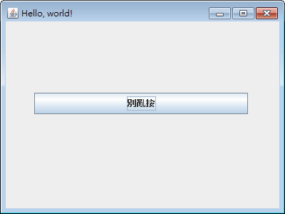
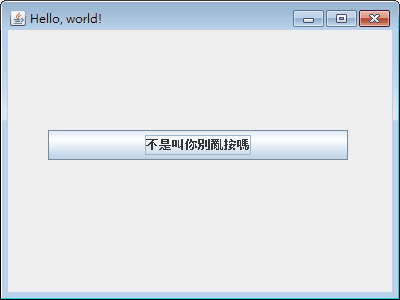

Java 自帶 JavaScript 引擎：Rhino 篇
Java SE 6 開始，不但可以讓其他程式語言跑 JVM，像是 PHP、Ruby、Python，並且內建 JavaScript 引擎：Rhino！這是由 Mozilla 以 Java 寫出來的，長年維護下來，功能穩定。
到了 Java SE 8，Oracle 重寫了新的 JavaScript 引擎：Nashorn，有更好的性能，且更符合 ECMAScript 標準，於是改用這引擎取代 Rhino。
差不多這時間，很多程式語言為了求新求變，開始每年發布一次新版，Java 自己也是，ECMAScript 也不例外！結果維護 Nashorn 變成棘手的工作，Oracle 不打算繼續這項專案。於是 Java SE 11[1] 將 Nashorn 引擎列為 deprecated，在 Java SE 15 正式汰除～
這件事讓我們反思，程式語言究竟每年更新一次，不斷把不曉得好不好用的新功能，推出給大家試用一下好？還是隨著時代確定有這需要了才頒定好？我覺得後者好，更新頻率太高，只會讓下游疲於奔命，跟不上腳步，導致放棄。
在 Java 寫 JavaScript 程式
從 Java 傳資料給 JavaScript 程式
寫在全域範疇
寫在區域範疇（避免汙染根物件）
在 Java 載入 *.js 檔案
script.js
Main.java
直接用 JDK 執行 *.js 檔
Java SE 6 提供 jrunscript.exe 程式，有 JavaScript 直譯器的功能！
script.js
命令提示字元
Interactive mode
執行 jrunscript.exe 時不加參數，會進入 interactive mode，一個能用 JavaScript 語言操作系統的環境：
CGI
jrunscript 跟 Perl 和 Python 一樣，又有 interactive mode、又可以直譯程式碼，那拿來當 CGI 的程式引擎當然沒問題。
不過 Rhino 的執行效率不高，建議用 Java SE 8 的 Nashorn，程式是 jjs.exe。
在 JavaScript 使用 Java API
用 importPackage() 可以載入套件，就像 import java.util.* 一樣。要注意的是，JavaScript 並未預設載入任何套件，所以就算是 java.lang.* 的類別也要自己載入。
只想載入某個類別的話，用 importClass()。
不過，透過引擎寫 JavaScript 程式，調用類別通常是直接寫完整名稱，例如：var a = new java.util.ArrayList()，比較符合 ECMAScript 標準，而不是呼叫 Rhino 獨有的 importPackage()。這樣的 JavaScript 比較容易移植，像是從 Java 的 Rhino 轉到 .NET 的 JScript .NET 會比較好修改～
另外，不像 JScript .NET 沒辦法使用 C# 中設計為泛型的類別，Java 的泛型只是語法糖，不像 C# 是真的有一套泛型機制，所以不支援泛型的 JavaScript 在調用 Java API 中用到泛型的類別，反而沒有相容性問題，就像視為 Object 的泛型一樣。
遇到 setXXX() 和 getXXX() 之類的方法，在 Rhino 可以寫成 .xxx，例如 frame.setTitle("Hello!") 可以寫成 frame.title = 'Hello'。
Swing 程式設計


在 *.js 中載入其它 *.js
load()
其它內建函式
內建函式實作在 org.mozilla.javascript.tools.shell.Global 類別，查一下 API 文件即可。
比較實用的有：
spawn()
sync()
其它的會有 Java 新舊版本支援不一的問題，功能也不穩定。所以像是 readFile() 或 write() 之類，雖然能用的話確實方便，但只要 Java API 能做到的，還是盡量用 API 去完成。Rhino 在內建函式方面處理得很糟糕～
其它功能
JavaScript 的場合
類別不是屬於 java.xxx.* 或 javax.xxx.* 這類全域套件時，會找不到套件名稱對應的類別，這時可以嘗試在 Package 物件裡面找，例如 var a = new Package.xxx.yyy.Zzz()。
Java 語言的場合
org.mozilla.javascript 套件底下，有各式類別可以組成 JavaScript，進行更細部的控制。
使用新版 Rhino
雖然 Java 不再內建 JavaScript 引擎，但 Mozilla 一直都在維護 Rhino 專案，有需要的人自行下載即可。
前往 http://github.com/mozilla/rhino/releases 下載最新版的 JAR 檔案，然後以執行 *.js 程式檔為例，輸入：
即可執行程式。
這樣的執行方式，會比 jrunscript.exe 少很多問題。
但原始碼使用不含 BOM 的 UTF-8 的編碼，在 Windows 會遇到亂碼的問題，這時改成：
1.7.8 版開始，必須 Java SE 8 以上才能使用，所以 Java SE 6 最多只能下載 1.7.7.2 版來用。
如何取得 Java 內建 Rhino 的版本
jrunscript -q
最後補充
在 Java 用 Rhino 跑 JavaScript 的方式有好幾種：
1、在 Java 程式碼撰寫 javax.script.* 跑 JavaScript 程式
2、用 jrunscript 載入 *.js 跑 JavaScript 程式
3、用 java -jar 掛載 Rhino 跑 JavaScript 程式
4、進入 Interactive mode 跑 JavaScript 程式
要注意的是，每一種會遇到的狀況並不一樣！越前面的受限越多、問題越多，越後面的越能發揮 Rhino 全部功能。例如第一種寫法會遇到無法使用內建函式 load() 的問題，第二種寫法會遇到 Swing 視窗閃退的問題，只有最後一種 Interactive mode 功能是齊全的！